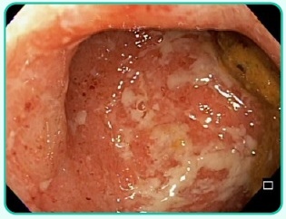

A retocolite ulcerativa é uma doença inflamatória intestinal crônica não contagiosa, em que há in amação e ulcerações no intestino grosso (cólon) e no reto em sua camada mais super cial, a mucosa. A manifestação hepática mais comum desta patologia é:
Várias doenças têm sido associadas à Colangite Esclerosante Primária. Qual doença abaixo está mais associada?
Paciente de 10 anos previamente hígido, que iniciou há cerca de 8 meses com hiporexia, perda de peso (cerca de 10kg), febre esporádica (cerca de 2 vezes na semana), alteração do hábito intestinal de constipado para regular (cerca de 2 evacuações semilíquidas por dia), associado a dor ao evacuar, e distensão abdominal. Nega vómitos. Sem outras queixas. Vacinação em dia. Teste do pezinho: normal. Ao exame: hipocorado (2+/4+), hidratado, emagrecido, com boa perfusão capilar, pulsos cheios e rítmicos. Aparelho digestivo: abdome distero, indolor, sem massas ou visceromegalias, ruído hidroaéreo positivo. Presença de abcesso associado a stula em região perianal. Toque retal sem alterações. Restante do exame físico sem alterações. Sobre o caso apresentado, é CORRETO afirmar que:
Homem, 45 anos de idade, apresenta icterícia de longa duração, sem sinais de insu ciência hepática ao exame físico. Exames laboratoriais mostram transaminases normais e fosfatase alcalina 4 vezes acima do limite superior da no rmalidade. Recentemente, iniciou quadro de diarreia muco sanguinolenta com 4 episódios ao dia e discreto emagrecimento. Quais são as hipóteses diagnósticas mais prováveis?
Assinale a alternativa correta quanto às características das doenças inflamatórias intestinais – doença de Crohn e retocolite ulcerativa.
A doença de Crohn é uma doença inflamatória intestinal que, mesmo com o progresso na terapia clínica, pode cursar com complicações de tratamento cirúrgico. É indicação absoluta de tratamento cirúrgico na doença de Crohn:
Paciente adulto jovem, 25 anos, apresenta há 6 meses um quadro de dor abdominal em cólica e diarreia intercalados com normalização das queixas. Notou que tem perdido peso, vigor e nota raias de sangue e muco nas fezes. Além do quadro gastrointestinal, apresenta lesões cutâneas compatíveis com pioderma gangrenoso e uveíte. Pensando-se em doença de Crohn e em seu diagnóstico, assinale a afirmativa correta.
Um paciente de 54 anos, etilista de 1 garrafa de destilado por dia durante 30 anos, apresenta quadro de dor abdominal constante há 5 anos. Há 1 ano, relata piora dos sintomas, apresentando perda de 3kg nesse período. Aumentou o emprego de analgésicos, porém com resposta parcial. Ao exame físico, encontrava-se com índice de massa corpórea = 23, abdome plano e ácido e dor na região epigástrica à palpação profunda. Realizou tomogra a de abdome, que mostrou dilatação do ducto pancreático principal, além de calci cações junto à cabeça pancreática, que se encontrava aumentada de tamanho. Com base nesse caso hipotético, assinale a alternativa correta:
Paciente com obstrução intestinal por doença de Crohn, que acomete íleo terminal a 2cm da válvula ileocecal, deve ser operado. Nesse caso, a cirurgia ideal consiste em:
O manejo cirúrgico das Doenças In amatórias Intestinais (Doença de Crohn e Retocolite Ulcerativa) deve ser utilizado em situações especí cas, em associação ao tratamento clínico otimizado dessas condições patológicas. Sobre essas enfermidades, assinale a correta.
Revisar: possível letra faltando em enunciado
Em relação às doenças inflamatórias intestinais, numerar a 2ª coluna de acordo com a 1ª e, após, assinalar a alternativa que apresenta a sequência CORRETA: (1) Colite ulcerativa. (2) Doença de Crohn. ( ) Diarreia mucossanguinolenta mais severa, com menores índices de perfuração. ( ) Maior acometimento perianal (fístulas e abscessos). ( ) A severidade da doença pode ser estimada pela Classi cação de Truelove and Witt (número de evacuações, presença de hematoquezia, temperatura, frequência cardíaca e velocidade de hemossedimentação). ( ) Presença de ASCA (anti-Saccharomyces cerevisiae) positivo e ANCA (anti-citoplasma de neutró los) negativo possui valor preditivo de 86% para o diagnóstico. ( ) Colonoscopia com úlceras longitudinais e padrão de ""pedras de calçamento"" (cobblestone). ( ) Achados histopatológicos, como comprometimento limitado à mucosa e à submucosa, com presença de abscessos crípticos. ( ) Costuma apresentar melhor resposta às medidas clínicas, e a abordagem cirúrgica pode ser considerada tratamento definitivo (sem novas recorrências).
Feminina, 37 anos, com história pregressa de colite de Crohn, em acompanhamento com proctologista e em uso de sulfassalazina, chega à emergência com queixa de febre alta, distensão abdominal e sinais clínicos de sepsis. Os exames laboratoriais mostram leucocitose e provas inflamatórias elevadas. A radiogra a abdominal evidencia distensão de todo cólon, sem sinais de pneumoperitônio. Uma provável hipótese diagnóstica e o tratamento seria:
Assinale a assertiva incorreta com relação à Doença de Crohn.
Ao se avaliar um paciente com doença de Crohn moderada a grave, com proposta de tratamento com terapia biológica anti-TNF, há indicação absoluta da realização de exames laboratoriais. No estadiamento desse paciente, qual exame é imprescindível?
Homem, 34 anos de idade, apresenta níveis de fosfatase alcalina persistentemente elevados. Retocolite ulcerativa diagnosticada há 3 anos. Exame físico e demais exames laboratoriais sem alterações. Qual é o diagnóstico que melhor explica a alteração apresentada?
Mulher jovem, com história de diarreia crônica e anemia, passa a apresentar lesões nodulares vermelhas e dolorosas nos membros inferiores. Quanto às hipóteses diagnósticas, qual é a alternativa correta?
Júlio César, 28 anos, vai ao consultório com queixa de dor abdominal e diarreia intermitentes há cerca de 7 anos, eventualmente com tenesmo e hematoquezia, negando emagrecimento. Exames laboratoriais de 1 mês atrás revelam VHS: 68 mm, Hb: 11,3 g/dL, VCM: 74 ft , HCM: 22 pg, Leucócitos: 8.900 enantema e friabilidade da mucosa, exibindo múltiplas úlceras ovaladas, recobertas por exsudato fibrinoso, além da perda do brilho e do padrão vascular do cólon [VIDE IMAGEM], estendendo-se, de forma contínua, do reto até o cólon transverso, por vezes, com aspecto tubular. As biópsias revelaram abscesso de criptas. Marcadores revelam p-Anca positivo, e ASCA negativo. Diante do caso, analise as 4 afirmativas abaixo, julgando-as como verdadeiras ou falsas. I. A hipótese mais provável é doença de Crohn, podendo-se esperar fístulas, abscessos cavitários ou estenoses, sendo necessário complementar a investigação com exame de imagem (TC ou ressonância). II. Essa doença costuma acometer todas as camadas da parede do intestino (comprometimento transmural). III. A hipótese mais provável é a retocolite ulcerativa. O acometimento exclusivo do cólon e o caráter contínuo da inflamação reforçam essa hipótese. IV. Essa doença costuma ser mais intensa nos segmentos proximais do cólon, diminuindo sua inflamação no sentido distal. Qual(is) é(são) correta(s).

A respeito das doenças inflamatórias intestinais, assinale a alternativa correta.
Adolescente de 12 anos de idade, com queixa de perda de peso nos últimos quatro meses e fezes amolecidas com média de três evacuações diárias. Nas últimas semanas, notou sangue vivo misturado com as fezes. Sempre foi saudável, com alimentação normal. Atualmente com hif?orexia e não está tomando leite de vaca pois acha que piora os sintomas. Qual o DIAGNÓSTICO MAIS PROVÁVEL para explicar este quadro?
A doença de Crohn se apresenta como uma doença intestinal inflamatória inespecí ca, que pode afetar qualquer segmento do trato gastrointestinal. Sobre as indicações cirúrgicas, é correto citar.
Revisar: possível letra faltando em enunciado
Paciente de 32 anos, do sexo masculino, comparece referindo diarreia volumosa, associada à perda de sangue e muco, emagrecimento e lesão de borda anal. Assinale a alternativa correta quanto ao diagnóstico mais provável.
A retocolite ulcerativa (RU) é uma doença caracterizada por episódios recorrentes de in amação dos cólons, limitada à mucosa, que comumente acomete o reto e pode se estender na forma de uma lesão contínua para acometer outras partes do cólon. A RU é classificada como uma doença inflamatória intestinal, juntamente com a Doença de Crohn (DC); embora sejam agrupadas em uma conceituação comum, guardam entre si diferenças clínicas importantes. Sobre as doenças inflamatórias intestinais, assinale a alternativa correta.
Paciente com doença inflamatória intestinal evolui com colangite esclerosante primária, portanto, possui risco aumentado de apresentar:
Paciente do sexo feminino, 28 anos, é trazida por familiares para avaliação médica devido a quadro de diarreia com muco e sangue há 2 semanas, com piora progressiva, associada a tenesmo e cólica em Fossa Ilíaca Esquerda (FIE) e Flanco Esquerdo (FE) de leve intensidade que melhorava após a defecação. Nega vômitos e febre. Nega episódios anteriores. Encontrava-se bastante pálida e desidratada, taquicárdica, eupneica e normotensa. Seu abdome era plano, ácido, indolor à palpação. Toque retal discretamente doloroso, com sangue em dedo de luva, sem massas ou nodulações palpáveis. A paciente foi então internada para investigação. Ao hemograma: hemoglobina 9g/dl e hematócrito 28%. Foi submetida a colonoscopia que evidenciou reto e cólon sigmóide com mucosas circunferencialmente acometidas, bastante hiperemiadas e friáveis, contendo múltiplas úlceras rasas. Assinale a alternativa INCORRETA:
Paciente com diagnóstico de RCUI (retocolite ulcerativa) que evoluiu para a forma grave da doença, sem melhoras após corticoterapia venosa habitual, tem como melhor opção terapêutica:
Paciente de 30 anos, sem comorbidades prévias, apresentando quadro de dor abdominal e diarreia aquosa há 6 semanas, com muco, pus e sangue. Submetido a colonoscopia que evidenciou múltiplas úlceras em íleo terminal, cólon direito e transverso, com áreas entremeadas de mucosa sã. Exame proctológico identificando fístula perianal. O diagnóstico mais provável é:
Menina de 14 anos apresenta queixa principal de dor abdominal há 4 meses associada a apetite diminuído, perda de 5 kg e ocasionais evacuações amolecidas e sem sangue. Na inspeção anal, são observados dois grandes plicomas. Exames laboratoriais: pesquisa de sangue oculto nas fezes positivo, hemoglobina de 8,8 g/dL e albumina de 3,2 g/dL. A principal hipótese diagnóstica é
Paciente de 29 anos, feminina, portadora de retocolite ulcerativa com queixa de diarreia, sangue, muco e perda de peso, em uso de mesalazina, doses baixas de corticoide e azatioprina e, mesmo com otimização das drogas mencionadas, não tem conseguido melhora clínica. Já teve 2 internações prévias por descompensação clínica. Atualmente, está com fortes dores abdominais, diarreia com frequência de 6 evacuações ao dia, muco nas fezes, náuseas e vômitos frequentes, dores articulares. Colonoscopia atual demonstra pancolite – (Mayo 2) com calprotectina fecal de 2 400 e PCR de 14,5. Diante deste caso, a melhor opção terapêutica é
Paciente de 29 anos, masculino, desde 2015 com dores abdominais, diarreia, muco e sangue nas fezes, realizou colonoscopia, que evidenciou se tratar de uma retocolite ulcerativa. Iniciou uso de Mesalazina sem grandes melhoras, sendo necessário uso esporádico de prednisona. Há 01 mês, teve quadro de abdome agudo perfurativo com peritonite, sendo submetido à laparotomia de urgência com sigmoide com grandes áreas de in amação ativa com perfuração e abscesso (retocolite aguda grave perfurada). Foi realizada colostomia proximal com sepultamento do coto retal distal (Hartman). Após sua recuperação e agora, nos controles ambulatoriais, é correto afirmar que
O termo Doença In amatória Intestinal (DII) é usado para representar dois tipos distintos de in amação intestinal crônica: doença de Crohn e Retocolite Ulcerativa. As influências genéticas e ambientais estão envolvidas na patogênese da DII. Em relação aos aspectos clínicos da DII, marque V para as afirmativas verdadeiras e F para as falsas. ( ) As manifestações extraintestinais que tendem a ocorrer na Retocolite Ulcerativa são pioderma gangrenoso, colangite esclerosante e espondilite anquilosante. ( ) A anemia ferropriva pode ser comumente encontrada nesses pacientes portadores de DII devido à perda sanguínea crônica. ( ) Sinais sistêmicos como febre, mal-estar e fadiga, além do dé cit de crescimento com atraso da maturação óssea e no desenvolvimento sexual, podem estar presentes na doença de Crohn. ( ) A Retocolite Ulcerativa é caracterizada pela formação de fístulas e abcessos. Assinale a sequência correta.
Em qual situação há indicação mandatória de tratamento cirúrgico na retocolite ulcerativa?
Um jovem de 20 anos de idade procurou atendimento médico com queixa de diarreia (10 episódios por dia), persistente havia seis meses, com perda de muco e sangue. O paciente a rmou que havia perdido 10 kg de peso nesse período. Por meio de uma colonoscopia, chegou-se ao diagnóstico de retocolite ulcerativa idiopática (RCUI). Com relação ao caso clínico hipotético precedente e a aspectos relacionados à patologia mencionada, julgue o item subsequente. Calprotectina fecal acima de 200 UI indica atividade da RCUI.
Com relação a doença de
Mulher, 54 anos, com retocolite ulcerativa apresenta quadro de megacolon tóxico com indicação cirúrgica. Pode-se afirmar que o procedimento cirúrgico melhor indicado é:
Mulher de 32 anos relata história de diarreia com muco, pus e sangue há seis meses, associada a febre, perda de peso e anemia. Apresenta lesões de pele descritas como pioderma gangrenoso e quadro de artrite em sacroilíacas. A colonoscopia evidenciou ulcerações difusas em retossigmoide e ausência de lesões macroscópicas em cólon descendente, cólon transverso, cólon ascendente e no íleo terminal. O diagnóstico mais provável e o exame que define a atividade da doença, respectivamente, são:
Paciente de 19 anos de idade apresenta queixa de dor abdominal difusa do tipo cólica, poliartralgia e diarreia com cerca de seis evacuações por dia, com muco e eventualmente sangue, acompanhada de perda de cerca de 6 kg. Os sintomas iniciaram há três meses. O paciente associa o início do quadro a uma crise ansiosa devido a problemas emocionais. Nega contato com alimentos possivelmente contaminados ou o uso de qualquer medicamento precedendo o quadro clínico. Nesse caso, a hipótese diagnóstica é:
Leia o caso clínico a seguir. Um paciente do sexo masculino de 25 anos, com diagnóstico de retocolite ulcerativa e achado colonoscópico de comprometimento retal e pancolônico com enantema, apagamento do quadro vascular e leve friabilidade da mucosa ao contato com o aparelho. Nesse caso, o diagnóstico e o laudo são, respectivamente:
A doença de Crohn é uma doença inflamatória crônica que pode ocorrer em qualquer parte do trato alimentar, porém, afeta mais comumente o intestino delgado e o cólon. Assinale a alternativa correta em relação a essa doença.
Leia o caso clínico a seguir. Paciente portador de doença de Crohn, em uso de budesonida e mesalazina há cerca de oito anos, apresentando quadros de dor e distensão abdominal recorrente, náuseas, vômitos, hipoproteinemia, anemia e perda de peso. Realizado exame de enterorressonância magnética, que identi cou tratar-se de forma estenosante jejunoileal com brose e dilatação a montante. Nesse caso, qual é a melhor opção terapêutica?
Leia o caso clínico a seguir. Paciente de 30 anos, do sexo masculino, portador de retocolite ulcerativa, forma pancolônica em uso de mesalazina 4,8 g ao dia, que necessitou de corticoterapia por três vezes no último ano. Nesse caso, a melhor indicação de tratamento é:
Paciente, sexo masculino, 30 anos, acompanhado em ambulatório especializado em Doença In amatória Intestinal por Doença de Crohn, com diagnóstico há 10 anos e em uso de imunobiológico. Submetido a duas cirurgias prévias com enterectomias. Chegou ao pronto-socorro com queixa de distensão e dor abdominal em cólica, vômitos amarelados e diminuição da eliminação de atos. Foi passada uma sonda nasogástrica descompressiva e referido a um serviço terciário. Foi instituído tratamento clínico e solicitada entero tomogra a que evidenciou múltiplas estenoses curtas (< 10 cm) sugestivas de brose crônica em segmentos de intestino delgado, sem alterações no cólon. Mediante melhora apenas parcial dos sintomas, foi solicitada avaliação cirúrgica. Com base na situação clínica exposta, qual a estratégia cirúrgica ideal?
Qual é a medicação inicial de escolha para o tratamento da retocolite ulcerativa?
Sobre a Retocolite Ulcerativa, assinale a alternativa correta.
Em relação ao uso de corticoides na doença de Crohn podemos afirmar que:
Paciente de 9 anos, apresentando diarreia crônica, retardo no crescimento e diversas fístulas e abscessos perianais, as quais foram biopsiadas e evidenciado in amação crônica inespecí ca. Ao ser encaminhada ao coloproctologista, este concluiu o diagnóstico como doença de Crohn. Considerando o caso descrito, assinale a alternativa INCORRETA:
Revisar: possível letra faltando em enunciado
Paciente, 19 anos, masculino, com queixa de perda ponderal e diarreia há 6 meses, com fezes líquidas sanguinolentas (sem coágulos) e eliminação de muco. Refere ainda dor abdominal em baixo ventre, sem queixas urinárias. Nega outros sintomas, refere tem apetite, porém se alimenta pouco devido ao grande número de evacuações, que muitas vezes fazem com que ele acorde a noite para ir ao banheiro. Ao exame físico, foi notória a presença de secreção mucoide e sanguinolenta no dedo de luva após toque retal. Escolha abaixo a conduta inicial para diagnóstico do caso e associação com a principal hipótese diagnóstica:
Homem de 28 anos, com quadro de diarreia há 8 meses, não sanguinolenta, associada a fadiga intensa. Relata perda de 7 kg no período. Relatava antecedente pessoal de uveíte anterior aguda recorrente há 2 anos. Ao exame físico apresentava-se emagrecido e com a presença de fissura anal. Qual a principal hipótese diagnóstica?
Homem, 32 anos, é portador de doença de Crohn e faz uso de sulfassalazina há 4 anos. Cursou com melhora do quadro intestinal logo no início do tratamento, sem apresentar agudizações ou crises. Há seis meses, apresenta queda do estado geral, referindo diarreias frequentes, duas pneumonias bacterianas com má resposta à antibioticoterapia convencional e três episódios de sinusite associados à otite média aguda. O desencadeamento dos quadros infecciosos se deve, mais provavelmente:
Paciente masculino, 31 anos de idade, com quadro de diarreia muco sanguinolenta crônica e perda de peso progressiva, é encaminhado ao ambulatório para avaliação e tratamento. No exame físico, apresenta-se descorado com abdome levemente distendido e doloroso à palpação mesogástrica. Traz exames solicitados em outro serviço: calprotectina fecal = 1348, Hb = 9, Contagem leucócitos = 13800, PCR = 14, TC de abdome mostrando espessamento com subestenose em íleo e colonoscopia com cólon e reto normais sem evidências de doença. Paciente fazendo uso de masalazina 800 mg 2x há 3 meses, sem melhora do quadro clínico. Diante do exposto, qual deve ser o tratamento a ser instituído?
Adolescente de 13 anos iniciou quadro de dor abdominal, diarreia mucossanguinolenta e perda ponderal há 2 anos. Após 1 mês do início, realizou endoscopia digestiva alta que evidenciou duodenite crônica inespecí ca leve e colonoscopia com úlceras profundas entremeadas de áreas de mucosa normal, e alguns segmentos com lesões coalescentes com estreitamento da luz. A biópsia intestinal revelou granulomas não caseosos com células gigantes de Langerhans. O diagnóstico do paciente e a conduta inicial a ser tomada são, respectivamente:
Revisar: possível letra faltando em enunciado
Homem de 31 anos de idade apresenta quadro de dor abdominal e diarreia sanguinolenta intermitente há 2 meses, sem urgência, tenesmo ou febre. O sangramento ocorre com e sem movimentos intestinais. Nega febre, calafrios, suores noturnos, artralgia, dor ocular ou erupção cutânea. Nega viagem recente, uso de antibióticos ou doenças prévias. Exame físico: sinais vitais normais; abdome: sensibilidade moderada à palpação do quadrante inferior esquerdo. A colonoscopia mostra eritema e ulceração não contínuos no cólon ascendente, descendente e sigmoide; reto e o cólon transverso normais. O histopatológico de biópsias das áreas afetadas revela criptas distorcidas e rami cadas, com formação de granulomas. O diagnóstico mais provável é
Paciente de 19 anos, internado para investigação de dor abdominal crônica, diarreia e perda ponderal. Realizou colonoscopia que evidenciou lesões do tipo descontínuas, segmentadas no trato gastrointestinal, com duas áreas afetadas separadas por uma porção de intestino normal, semelhante a uma superfície em aspecto de paralelepípedo. À microscopia observam-se agregados linfocitários na submucosa e no exterior da camada muscular própria, com presença de granulomas epitelióides. Trata-se PROVAVELMENTE de:
A Doença de Crohn (DC) é uma doença inflamatória intestinal, que apresenta exame histopatológico pode indicar o seguinte item:
São indicações cirúrgicas para Colite de Crohn:
Homem, 54 anos, com colite ulcerativa idiopática e quadro de megacólon tóxico. Diante deste diagnóstico, o tratamento cirúrgico mais adequado é:
Um homem de 54 anos queixa-se de prurido generalizado e fadiga. É portador de retocolite ulcerativa e faz uso de mesalazina. Nega etilismo ou tabagismo. Ao exame físico, as mucosas são coradas, hidratadas e ictéricas. Não há outras anormalidades no restante do exame. Exames de laboratório: Hg: 12,4g/dL; LG: 5.670/mm³; plq: 213.000/mm³; creat: 0,8mg/dL; ur: 15mg/dL; Ca: 8,8mg/dL; BT: 3,5mg/dL; BD: 2,8mg/dL; FA: 346U/L; GGT: 450U/L; AST: 84U/L; ALT: 58U/L. Ultrassonogra a abdominal: fígado, pâncreas e vias biliares sem anormalidades; imagens hiperecogênicas com sombra acústica posterior nos cálices renais direitos e esquerdos; ureteres de calibre normal; bexiga sem alterações. assinale o teste diagnóstico MAIS ADEQUADO na propedêutica desse paciente.
São indicações de tratamento cirúrgico na colite ulcerativa, EXCETO:
Na Doença de Crohn, os fatores de mau prognóstico são
Um paciente de 30 anos, sabidamente portador de doença de Crohn de intestino delgado desde os 19 anos, procurou o hospital com queixas de piora da diarreia, associada à dor em cólicas em região periumbilical e distensão abdominal, tendo apresentado alguns episódios de vômitos na última semana. Dentre os exames abaixo, qual NÃO estaria indicado nesse momento para avaliar a atividade da doença?
Diante de um paciente com doença inflamatória intestinal estenosante compatível com Doença de Crohn, qual das manifestações abaixo pode ser considerada manifestação extra-intestinal da doença?
Sobre a Doença de Crohn, assinale a correta:
Sobre a doença de Crohn, assinale com V as afirmativas verdadeiras e com F as falsas. ( ) Início insidioso, febre baixa e diarreia são manifestações clínicas encontradas na doença de Crohn. ( ) A doença de Crohn não acomete o intestino delgado, limitando-se aos intestinos grosso e reto, sendo o cólon descendente o mais atingido. ( ) A doença de Crohn limita-se à superfície mucosa do cólon, não atingindo planos mais profundos. ( ) O tabagismo está associado ao desenvolvimento da doença de Crohn, à resistência à terapia médica e à recaída precoce da doença. Assinale a sequência correta.
Um homem de 23 anos vai ao pronto-atendimento do Hospital da Polícia Militar de Minas Gerais queixando-se do aparecimento de lesões ulceradas, dolorosas, de bordas elevadas e fundo necrótico em região anterior de perna esquerda há 2 semanas. Relata quadro de diarreia piosanguinolenta há 3 meses, em investigação no ambulatório de Gastroenterologia. Apresenta resultado de colonoscopia recente, que revela presença de úlceras serpiginosas no íleo distal, com deformação da válvula ileocecal. Ultrassonografia abdominal demonstra a presença de nefrolitíase bilateral. Assinale a alternativa CORRETA sobre o caso deste paciente.
Paciente de 30 anos, do sexo masculino, portador de retocolite ulcerativa, em tratamento com mesalazina oral na dose de 4,8 g/dia, mantendo crises de diarreia sanguinolenta e cólicas abdominais, níveis de PCR elevados e colonoscopia evidenciando retocolite Mayo 2. Nos últimos meses, fez uso de prednisona por curtos períodos, trazendo benefícios satisfatórios. Neste caso, seria adequado
Paciente jovem, 25 anos, com quadro de diarréia com muco, pus e sangue há 3 meses, com perda ponderal. Em investigação realizou colonoscopia com biópsia.
Na doença de Crohn (DC) com atividade inflamatória intestinal grave a fulminante os pacientes serão tratados preferencialmente em hospitais terciários. Está inadequado apenas que:
Homem de 32 anos se queixa de dor abdominal periumbilical em cólica, que alivia após a evacuação. Há diarreia em grande volume com fezes líquidas, algumas vezes contendo sangue, em 4 episódios ao dia, há 35 dias. Apresentou alguns episódios febris e perdeu 2kg no período. Desconhece doenças prévias e nega o uso de medicamentos ou drogas ilícitas. O exame do abdômen revela dor à palpação profunda difusa, sem sinais de irritação peritoneal. O toque retal não revela alterações. Sem outras anormalidades no restante do exame físico. Exames de laboratório: hemoglobina 11,2g/dL, leucócitos 5.460/mm³, plaquetas 230.000/mm³, proteína C reativa 12mg/dL, calprotectina fecal positiva. Colonoscopia: áreas de hiperemia e úlceras longitudinais na mucosa do íleo terminal, ângulo esplênico do cólon e sigmoide. Demais regiões com mucosas de características normais. Considerando o caso descrito, assinale a alternativa que apresenta o diagnóstico MAIS ADEQUADO para esse paciente:
Paciente de quarenta e cinco anos de idade queixa-se de diarreia persistente há 6 meses, com 5 a 10 episódios de fezes líquidas por dia, sem produtos patológicos, associada a dor abdominal e atulência, mas sem febre e sem perda de peso. Tendo esse caso clínico como referência, julgue o item subsecutivo. Nos casos de diarreia crônica com suspeita de doença inflamatória intestinal, o anticorpo anti Saccharomyces cerevisiae (ASCA) tem alta sensibilidade para retocolite ulcerativa.
A aterapia biológica com anti-TNF, infliximabe ou adalimumabe é útil na doença de Crohn para:
Uma doença tem distribuição bimodal, afetando adultos jovens, com um segundo pico de incidência aos setenta anos de idade. Apresenta prevalência particularmente aumentada em judeus asquenazes e acomete mais comumente o íleo distal e o cólon proximal. O tabagismo associa-se a um pior prognóstico. Os anti-inflamatórios não hormonais parecem estar associados a exacerbações. Assinale a alternativa correta com relação à doença caracterizada no texto acima.
Sobre a Doença de Crohn, assinale a alternativa INCORRETA:
Adolescente de 13 anos, sexo masculino, queixa-se de diarreia e dor abdominal há várias semanas. Mãe relata que há dez dias, após ter passado alguns dias em colônia de férias, seu lho passou a apresentar fezes semilíquidas a líquidas, duas a três vezes por dia, com algumas raias de sangue e catarro e febre baixa não aferida. Exame físico: T- 37,9°C, palidez cutâneo- mucosa +/4+, abdome discretamente doloroso em fossa ilíaca esquerda, sem sinais de patologia cirúrgica aguda. Na consulta de retorno, a mãe trouxe os exames solicitados: Hb 9,3g/dl, HT28%, macrocitose, VHS: 75 mm/1ª hora. Endoscopia baixa – presença de in amação contínua na mucosa retal e cólon esquerdo, com íleo terminal normal. A hipótese diagnóstica é:
Homem de 30 anos, portador de Retocolite Ulcerativa há 12 anos, refere 8 a 10 evacuações ao dia, mucossanguinolentas, associadas a dor abdominal e febre no último mês. Está em uso de Mesalazina 2 g/dia e Azatioprina 150 mg/dia. Na consulta encontrava-se taquicárdico, hidratado e com abdome doloroso à palpação profunda, sem sinais de irritação peritoneal. Exames laboratoriais evidenciam Hb = 11,7 mg/dl; leucócitos = 4.200/mm³ sem desvio; plaquetas = 530.000/mm³; U = 36 mg/dl Cr = 1,2 mg/dl; PCR = 75 mg/dl, Sat Fe = 7%; albumina = 3,2 g/dl. Última colonoscopia realizada há 1 ano: enantema difuso do cólon esquerdo, com perda do padrão vascular, sem erosões ou friabilidade. Cólon direito e transverso sem alterações. O manejo mais adequado nesse caso é:
Homem, 17 anos, refere hábito intestinal normal com uma evacuação diária, e que há 2 meses passou a evacuar 10 vezes ao dia com emergência evacuatória, sensação de evacuação incompleta, presença de muco e sangue nas fezes, emagrecimento de 10Kg nesse período. Assinale a hipótese diagnóstica:
Assinale os segmentos intestinais mais frequentemente acometidos pela colite ulcerativa:
Paciente feminina, de 23 anos, refere que iniciou diarreia, inicialmente aquosa, após uso de antibióticos por quadro de sinusopatia, que evoluiu com presença de muco e sangue associado. Apresentava ritmo intestinal normal até início do quadro. O exame físico revela abdômen com dor leve, difusa à palpação e sem sinais de irritação peritoneal. Realizado ileocolonoscopia que mostra enantema, friabilidade da mucosa em todos os segmentos avaliados, inclusive íleo-terminal. Anatomopatológico mostrou: sinais inflamatórios, com presença de microabscessos. Qual a principál hipótese diagnóstica?
Diante de um paciente com suspeita de doença inflamatória intestinal virgem de tratamento, diferenciar entre doença de Crohn e retocolite ulcerativa pode ter relevância na orientação, prognóstico, assim como na tomada de decisão quanto ao tratamento clínico e cirúrgico. Qual dos seguintes fatores abaixo está mais fortemente associado ao diagnóstico de retocolite ulcerativa?
No que diz respeito ao tratamento cirúrgico na doença de Crohn podemos afirmar que o mesmo está indicado:
Nas doenças inflamatórias intestinais ocorrem os seguintes fatos, EXCETO: (DENNIS L. KASPER, STEPHEN L. HAUSER, J. LARRY JAMESON . Medicina Interna de Harrison, parte 14, Seção 1 -19.Ed– 2016.).
C.I.D., 24 anos, masculino, caucasiano, procurou ambulatório de clínica médica por apresentar há 3 meses diarreia sanguinolenta, emagrecimento, febre e nódulos violáceos dolorosos na região pré-tibial bilateralmente. Realizou colonoscopia, que mostrou processo inflamatório comprometendo sigmoide, cólon descendente e cólon transverso. A pesquisa do anticorpo anticitoplasma de neutro lo (p-ANCA) foi positiva. Sobre a principal hipótese diagnóstica do caso, assinale a alternativa FALSA.
A doença inflamatória intestinal consiste de 2 entidades: a Doença de Crohn (DC) e a Retocolite Ulcerativa (RCU). O diagnóstico diferencial por vezes é difícil por haver sobreposição das manifestações clínico-patológicas entre elas. Em relação ao diagnóstico diferencial entre essas entidades, assinale a alternativa CORRETA:
As doenças inflamatórias intestinais na infância caracterizam-se por também poderem apresentar manifestações extraintestinais. Com relação a esse conjunto de manifestações, assinale a alternativa correta.
Observe as afirmativas sobre o tratamento cirúrgico nos portadores de doença de Crohn: I. O tratamento cirúrgico pro lático está indicado em pacientes bem controlados pelo tratamento clínico evitando-se assim um maior risco de complicações. II. A ressecção intestinal é o método de escolha e deve ser ampla, principalmente na primeira vez em que se utiliza o tratamento cirúrgico, visto que aproximadamente 50% dos pacientes operados têm recidiva da doença, que deve ser evitada. III. Em pacientes com fístulas, a ressecção em bloco é a mais indicada e a reconstituição do trânsito intestinal deve ser por meio de anastomoses términoterminal ou láterolateral. IV. A enteroplastia é uma boa opção quando existem múltiplas estenoses anulares e segmentares, sobretudo se o paciente já tiver feito cirurgia. Assinale a alternativa CORRETA:
Uma paciente de 28 anos recebeu o diagnóstico de doença de Crohn, com acometimento perianal e do intestino delgado, onde apresenta uma área de estenose não obstrutiva na transição jejunoileal. Atualmente está com seis evacuações ao dia, algumas cólicas e um trajeto stuloso na região perianal. Demonstra desejo de engravidar nos próximos seis meses. Assinale a alternativa CORRETA com relação ao tratamento para esse caso.
Paciente, 20 anos, apresenta dor abdominal recorrente em fossa ilíaca direita. Tomogra a de abdome sem contraste, realizada no período de crise, não mostrou “borramento” em quadrante inferior direito, nem liquido livre ou coleções. Adicionalmente o paciente relata que há vários períodos com diarreia sanguinolenta e distensão abdominal. O exame físico do doente identifica sinais de artrites, eritema nodoso e uveite. Diagnóstico mais provável é de:
Sobre a Doença de Crohn, assinale a alternativa INCORRETA:
É exemplo de doença inflamatória não formadora de granulomas:
A doença de Crohn é uma forma de doença inflamatória intestinal e o diagnóstico diferencial da mesma ocorre principalmente com a retocolite uncerativa idiopática. São características desta última (retocolite) que ajudam a diferenciá-la da doença de Crohn:
Na doença de Crohn,
Um homem de 29 anos apresenta diarreia com fezes pastosas misturadas com sangue vivo, 4-5 vezes ao dia, há dois anos. No início do quadro, realizou colonoscopia com biópsias do sigmoide que mostrou infiltrado misto difuso, linfoplasmocitose basal, atro a e irregularidade de criptas, e erosões super ciais. Há 6 meses, iniciou dor lombar persistente, que o desperta do sono, piora ao acordar, e que melhora 2 horas após iniciar suas atividades. Apresenta hematócrito de 32%, hemoglobina de 10,5 g/dl, proteína C- reativa elevada, antígeno HLA-B27 reagente. Ressonância magnética mostra sinais de in amação sacroilíacas intra-articular com edema importante da medula óssea justa- articular. Qual tratamento medicamentoso traz mais benefício para este doente?
Qual das alternativas abaixo NÃO é uma indicação para cirurgia na colite ulcerativa?
Assinale a alternativa INCORRETA sobre a doença de Crohn:
Paciente gestante com doença inflamatória intestinal, pode fazer tratamento com todas as drogas abaixo, exceto esta, que se constitui em contraindicação absoluta:
Homem, 26 anos, estudante em tratamento de hipotireoidismo, refere ter iniciado há 2 anos com dor lombar crônica, sem relação com esforço físico, com piora matinal e em repouso. Faz uso esporádico de ibuprofeno, com melhora parcial. Neste período, vem apresentando episódios de diarreia intermitente sem produtos patológicos, associado a desconforto abdominal. Relata período de aumento do estresse e fadiga. Ao exame físico, chama a atenção discreta palidez e distensão abdominal. Com base nos dados clínicos, qual a hipótese mais provável para este paciente?
Paciente com 32 anos, portador de doença de Crohn, submetido a enterectomia de íleo terminal, pode desenvolver as seguintes condições, exceto
Pacientes portadores de DII e que sofreram ressecção do cólon tendem a apresentar que tipo de complicação renal
Marque a alternativa que correlaciona certo as colunas abaixo: 1 - Retocolite ulcerativa; 2 - Doença de Crohn; 3 - Ambas; 4 - Ambas, porém mais comum na retocolite; a) História familiar positiva; b) Acomete a mucosa de forma homogênea e ascendente; c) Alterações inflamatórias transmurais; d) Risco para câncer de cólon; Respostas: 1 12 23 34 45 56 67 78 89